MASTER'S RESEARCH | UAV REMOTE SENSING
Remotely Sensing Irrigation Distribution Uniformity in California Almond Orchards
University of Wisconsin–Madison | Biological Systems Engineering
Abstract
Woody perennial crops, such as almond orchards in California’s Central Valley, require approximately 101-156 cm of water per year to meet crop evapotranspiration demands, while the Central Valley only receives 50-75 cm of rainfall per year. This water requirement in a region undergoing aridification poses significant challenges for both growers and regulators. Irrigation Distribution Uniformity (DU) is a key metric for assessing how evenly water is applied within an irrigation system. Regular DU testing helps to identify non-uniformity and guide maintenance to improve efficiency. However, ground-based DU tests are time- and labor-intensive, are difficult to schedule with growers, and typically represent only a narrow portion of a field, limiting their routine use. Consequently, an estimated 66% of nut orchards in California’s Central Valley may be operating with suboptimal irrigation uniformity. To address these limitations, remote sensing can provide a whole-field perspective on irrigation performance while reducing the time and labor required for DU testing. The goal of this thesis is to develop new approaches for assessing DU using high resolution unoccupied aerial systems (UAS) multispectral and thermal data. The specific objectives are to: (1) summarize and assess the current methodology of assessing irrigation DU; (2) synthesize the current research on the use of remote sensing technologies for detecting and quantifying irrigation non-uniformity; (3) quantify the Lowest Quarter Distribution Uniformity (DUlq), Christiansen Uniformity Coefficient (CUC), and Uniformity Coefficient (UC) for entire California almond orchards using UAV multispectral and thermal imagery, and compare these with localized catch can test measurements; (4) identify spatial patterns of over- and underwatering to support targeted system maintenance; and (5) develop practical methodologies and remotely sensed DU indicators that enable growers to rapidly evaluate irrigation DU in almond orchards, with or without extensive field testing. We accomplished these objectives by conducting a literature review across the existing remote sensing of DU literature to create a methodology that builds upon existing work. We then collected UAS multispectral and thermal imagery over 14 almond orchards in the California Central Valley. We used catch can test data and canopy pixels (NDVI > 0.30) to calculate UC, DUlq, and CUC using whole-field and catch can test location pixels with GRVI, NDRE, NDVI, LE, and LST. We identified the areas of over- and under-watering by calculating a modified zscore for GRVI and LST and used their distribution extremes to flag pixels for further investigation using land contextual variables, including soil available water content and elevation data. From the literature review, we found that thermal and related imagery, such as LST, LE, and CWSI can detect short-term responses to water stress, with the heterogeneity of irrigation application being more pronounced in water stress periods. Vegetation indices, such as GRVI, NDRE, and NDVI detect the long-term effects of water stress as well as historical differences in land practices and soil heterogeneity. In California almond orchards, GRVI performed the best for remotely sensing DU in the UC, CUC, and DUlq equations for both the whole-field analyses and the catch can test location analyses. I developed a modified z-score index, MZDU, defined as the difference between the LST modified z-score and GRVI modified z-score for each pixel, which successfully captured the known leaks and clogs at a focus test site and revealed the patterns of over- and under-watering for further investigation. The final set of tools from this study includes flagging pixels based on their MZDU value (< -3.0 for over-watering or > 3.0 for under-watering), and diagnostic approach for determining if the problem is irrigation-based or land-based, and a diagnostic approach for identifying potential failures in pressure-compensating irrigation lines on fields with elevation changes. The resulting methodology provides actionable, time-efficient tools for growers and organizations such as Resource Conservation Districts to assess irrigation uniformity in almond orchards. This framework can be transferable to other woody perennial crops and irrigation systems, offering a pathway toward more frequent irrigation system evaluation and improved water-use efficiency in water-limited agricultural regions.
Introduction
Spatial variability in irrigation application can produce differences in soil water availability and plant water status. These differences may influence canopy temperature and vegetation reflectance, providing opportunities to investigate irrigation performance using remote sensing technologies. The following illustrations introduce the relationship between irrigation distribution uniformity, vegetation indices, thermal imagery, and hydraulic characteristics of irrigation systems.
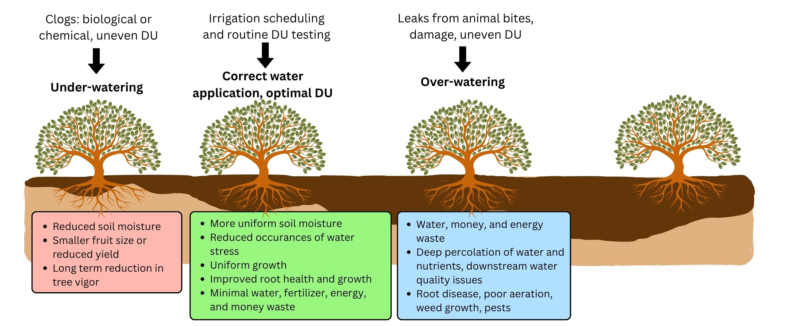
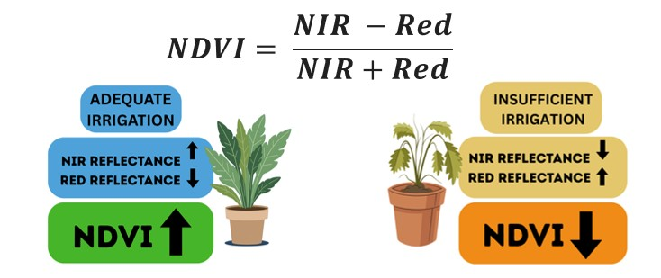
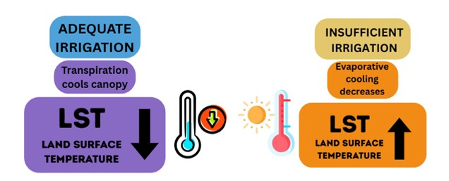
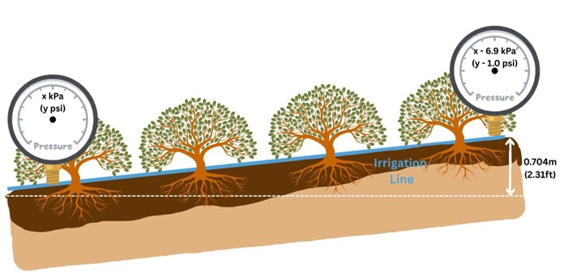
Methods
The research combined ground-based irrigation assessments with UAV imagery, field instrumentation, and spatial analysis. The following figures describe the study area, data collection procedures, imagery processing, and preparation of geospatial model inputs.
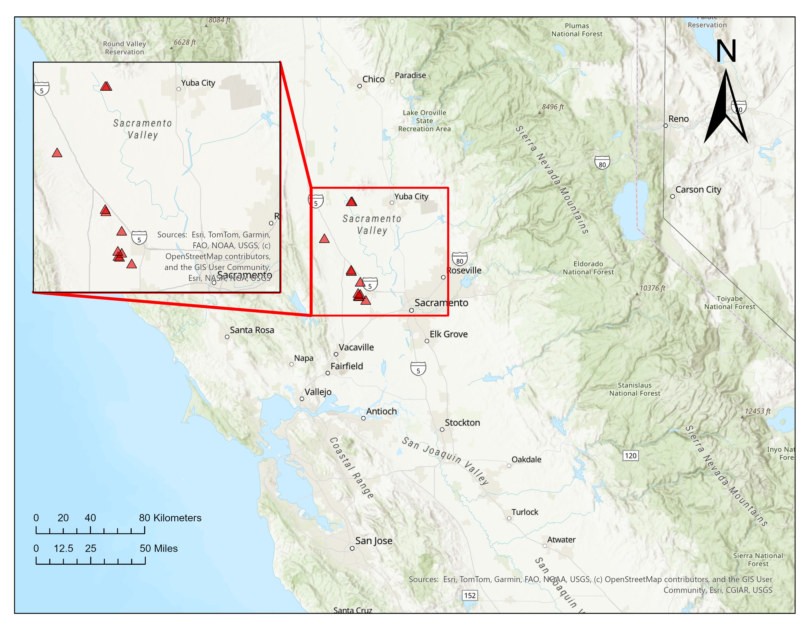
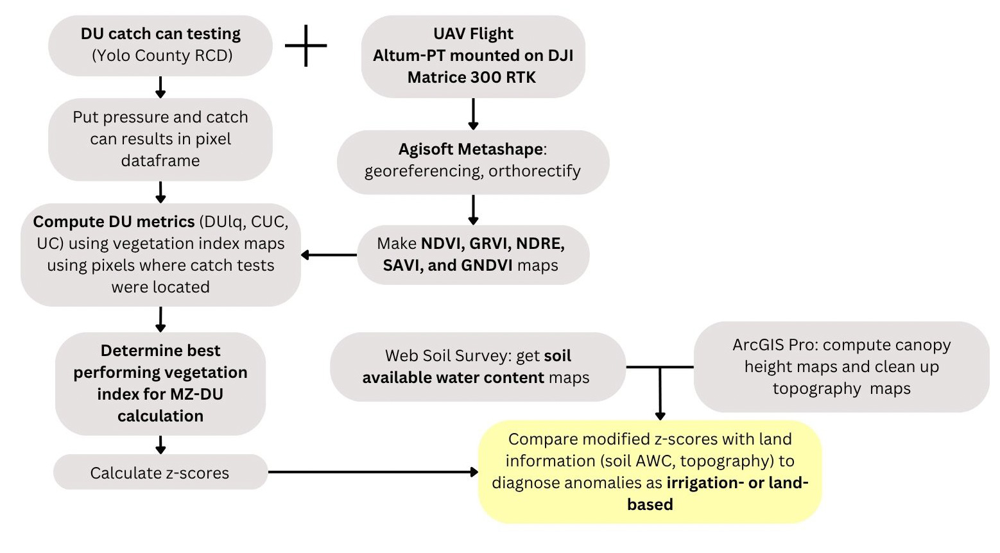
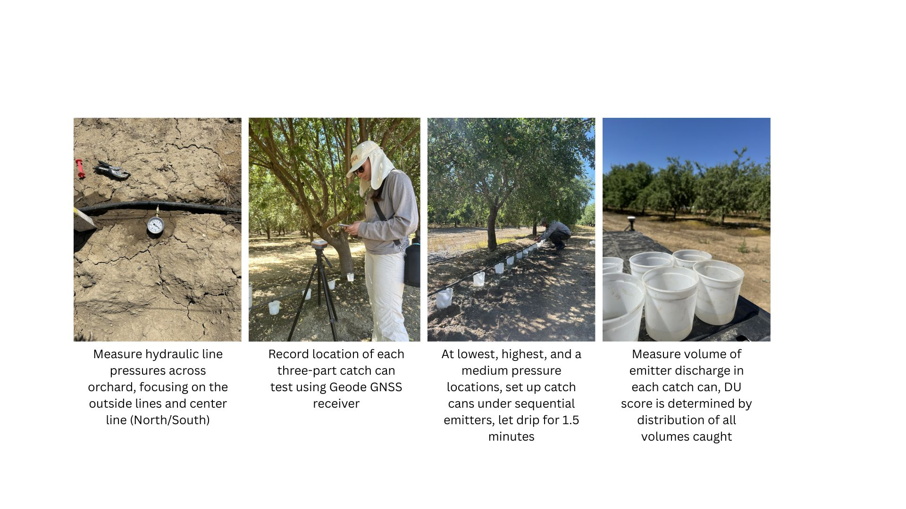

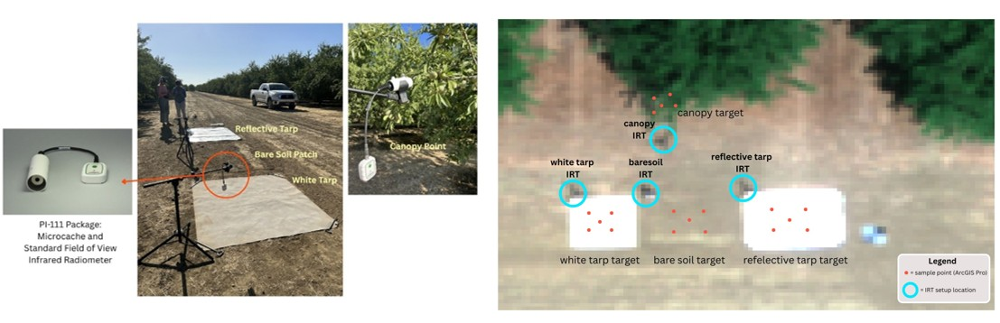

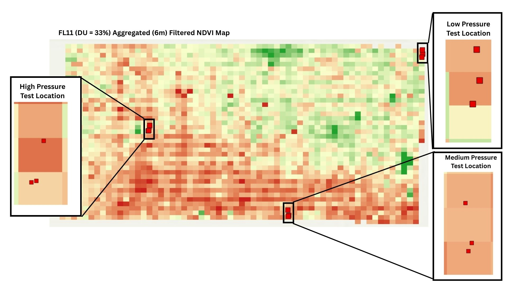
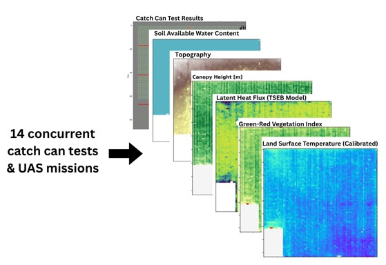
Results
The following figures illustrate selected results from the spatial DU analysis, including the identification of irrigation-related anomalies and investigation of elevation-related differences in remotely sensed canopy responses.
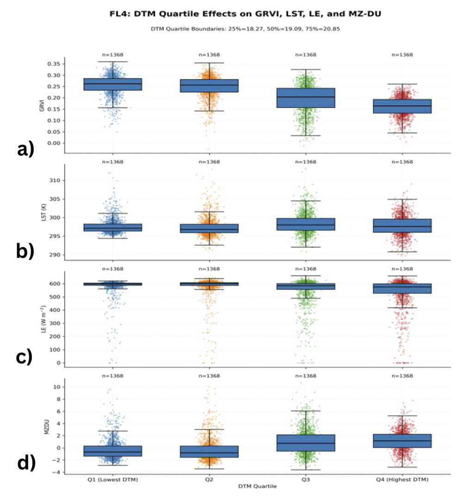
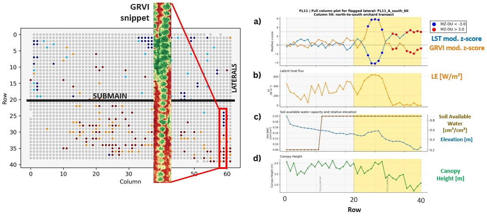
Thermal Calibration
A separate component of this research investigated thermal imagery calibration using infrared thermometer measurements. The following figures document the calibration workflow, comparisons before and after calibration, and examples of thermal drift.
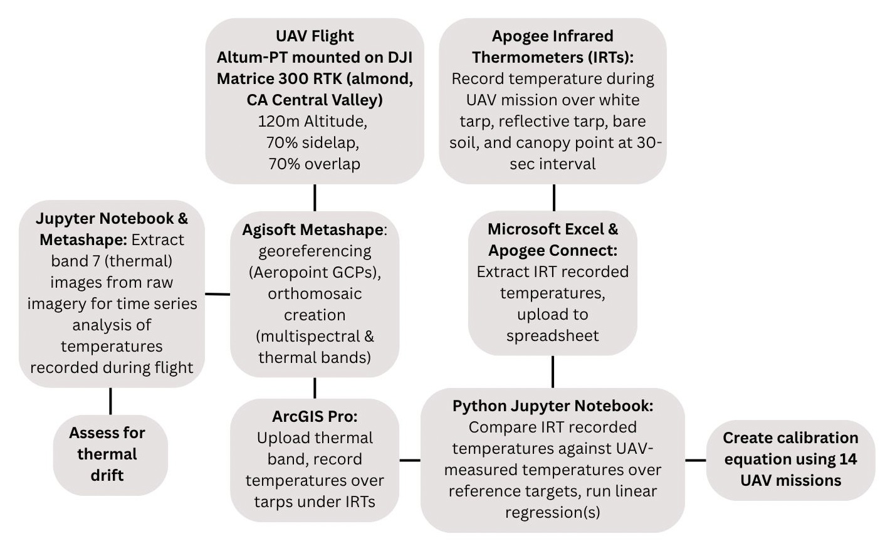
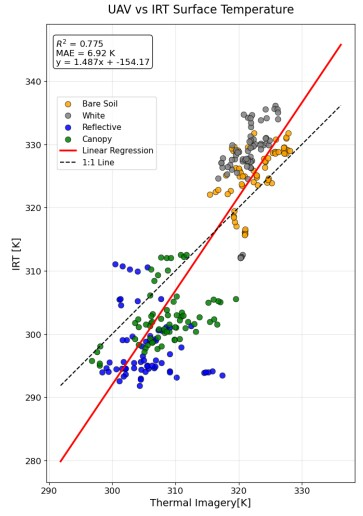
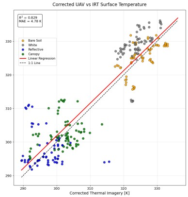
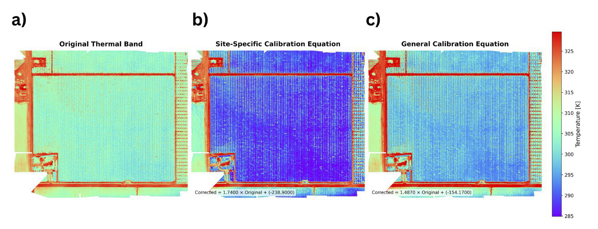
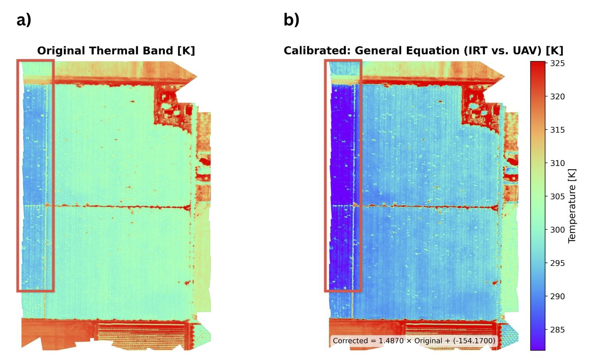
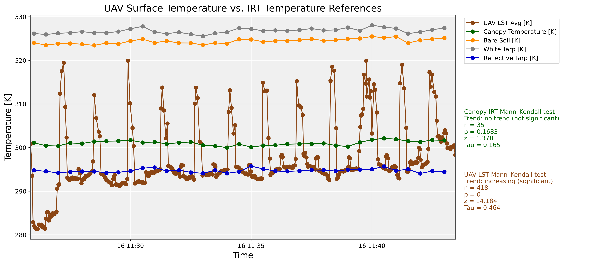
UAV LST measurements showed a statistically significant temporal trend according to the Mann–Kendall test (p = 0.00018), whereas canopy temperature measurements did not exhibit a statistically significant trend (p = 0.4182). Canopy temperatures averaged approximately 300 K during the flight, while the Altum-PT radiometric temperature over the nearly full-canopy orchard averaged below this value. Temperature spikes in the Altum-PT measurements occurred when the UAV passed over exposed dirt roads along the outer boundaries of the orchard.
This research was presented to the Almond Board of California (funded this research) in September 2026. The findings, models, methodologies, and workflows will be implemented into state-wide efforts to reduce water, energy, and labor waste in commercial almond orchards.